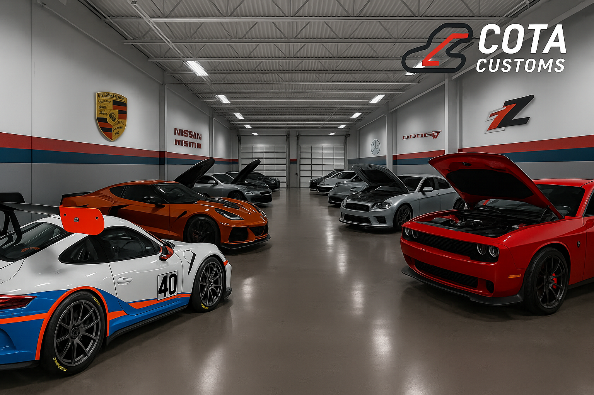

Our Story
Born in the heart of Texas at Circuit of the Americas, COTA Customs was founded by racers for racers. From the track to the street, we bring performance, precision, and personality to every build. Whether you're rolling to a show, our expert tuning, fabrication, and customization make your car feel as fast as it looks.
Cars and Builds
